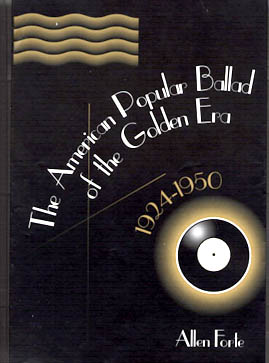

|  |
|
Although my primary scholarly interest has been directed toward what is often called art music, consisting of the classical repertoire of tonal music of the 18th and 19th centuries, in recent years I have cultivated an interest in exploring the repertoire of what I call classic American popular song, the very large corpus of music created during the 1920s, 30s, and 40s by such household names as George Gershwin, Cole Porter, and Richard Rodgers primarily for the American musical theater, but also for motion pictures and for the sheet music market. |
The repertoire is very special on four counts. It is the largest fully notated body of solo song with English language text; it is the last large corpus of music based upon traditional tonality; the songs have been subjected to a greater range of performance variability than have those of any other repertoire; and finally, the musical values of the music have been certified not by press agents, by the media, or by critics, but by performing musicians of talent and taste, prominent among whom are the jazz musicians who have performed this music over many decades.
My credentials for approaching this music began to be established during a misspent childhood when I was encouraged to play popular music and jazz as well as "classical," and continued through my high school days, when I played professionally at country clubs and at other clubs that were marginally legal. This broad educational experience came in handy when I decided to write my book on the American popular ballad: The American Popular Ballad of the Golden Era 1924-1950. Princeton: Princeton University Press, 1995. In 1997, this work was awarded the Wallace Berry Award by the Society for Music Theory, as the first "serious" theoretical and analytical study of the American song of that period.
 Subsequently, I have embarked upon a related project, a smaller book intended to introduce the layman to this indigenous music in a painless way (avoiding words like "indigenous") by the inclusion of a compact disk that contains all the songs discussed in the book. The excellent singer and accompanist are Richard Lalli and Gary Chapman, respectively. Since I am the author I was able to exert some influence on the production of the CD, and can be heard as accompanist-arranger for two of the songs. Indeed, Mr. Lalli was sufficiently impressed by my efforts in this connection that he suggested I go into music. The book is published by Yale University Press (2001). It is entitled: Listening to Classic American Popular Songs. Subsequently, I have embarked upon a related project, a smaller book intended to introduce the layman to this indigenous music in a painless way (avoiding words like "indigenous") by the inclusion of a compact disk that contains all the songs discussed in the book. The excellent singer and accompanist are Richard Lalli and Gary Chapman, respectively. Since I am the author I was able to exert some influence on the production of the CD, and can be heard as accompanist-arranger for two of the songs. Indeed, Mr. Lalli was sufficiently impressed by my efforts in this connection that he suggested I go into music. The book is published by Yale University Press (2001). It is entitled: Listening to Classic American Popular Songs.
 SONGS OF YESTERDAY FOR TODAY SONGS OF YESTERDAY FOR TODAY
Twenty popular standards arranged by Allen Forte and recorded by Martha Bennett Oneppo, vocals, and Allen Forte, pianist. (Click the photo to read some reviews.)
COLE PORTER BOOK
Spring, 2005: I have been awarded a $2,000 grant by the Koerner Center at Yale University to write a monograph on Cole Porter. Look for it in 2006.
|